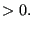
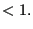

Next: *SECTION PRINT Up: Input deck format Previous: *RIGID BODY Contents
Keyword type: step
This procedure is used to perform a robust design analysis. It is used to create random fields based on correlation and geometric tolerance information provided by the user. The only parameter RANDOM FIELD ONLY is required.
The result of a robust design analysis is a set of eigenvectors (random fields) which represent the possible fluctuation of the geometry of the structure caused by the tolerances and up to a specified accuracy. Other keywords needed in a robust design analysis are *CORRELATION LENGTH and *GEOMETRIC TOLERANCES.
First line:

and
).
Example: *ROBUST DESIGN,RANDOM FIELD ONLY 0.99
defines a robust design analysis up to an accuracy of 99 %.
Example files: beamprand.